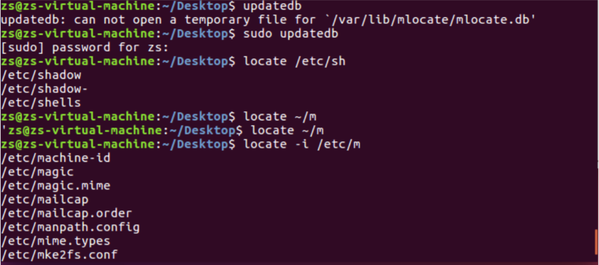

Linux系统常见命令
基本操作
cd (Change Directory)命令：跳转目录
- cd path ： path为路径，进入相应目录
- cd # 或 cd ~ ：回到主目录
- cd - ： 回到上次所在目录
- cd !$ ：将上个命令的参数做为输入
- cd .. ：回到上层目录

ls (List) 命令：列出当前目录文件
ls ： 显示当前目录文件
*ls -a *：显示全部的文件及文件夹，包括隐藏的文件和文件夹。
ls -l ： 显示较全的文件信息，包括权限，用户，用户组。

Tab 键：通过按Tab可以进行自动补全。如果当前目录有前缀相同的文件，则按两下Tab可以显示出所有以具有该前缀的文件。
mv (Move) 命令：移动（剪切）文件，也可以用作一个等效给文件或目录的重命名。
通过
mv 文件x 目录a可以将当前目录下的文件x移入目录k。
cp (Copy) 命令：拷贝，将一个文件或目录拷贝到另一个文件或目录。
通过
cp [options] 文件x 目录a可以将当前目录下的文件x复制到目录a。- -a：此选项通常在复制目录时使用，它保留链接、文件属性，并复制目录下的所有内容。其作用等于dpR参数组合。
-d：复制时保留链接。这里所说的链接相当于Windows系统中的快捷方式。
- -f：覆盖已经存在的目标文件而不给出提示。
-i：与-f选项相反，在覆盖目标文件之前给出提示，要求用户确认是否覆盖，回答”y”时目标文件将被覆盖。
- -p：除复制文件的内容外，还把修改时间和访问权限也复制到新文件中。
-r：若给出的源文件是一个目录文件，此时将复制该目录下所有的子目录和文件。
- -l：不复制文件，只是生成链接文件。
pwd(Print Working Directory) 命令：打印出当前工作目录
mkdir 命令 ：
mkdir name创建一个名为name的文件夹rm (Remove) 命令 ：删除文件，删除文件后不可恢复。特殊的 ，rmdir ** 为删除文件夹命令，rm -r是先删除目录内的内容，再删除目录。 **rm -i 为交互式进行删除，一个个确定。rm -f 为强制删除（慎用）。
gedit 命令：
gedit path打开编辑某个文件。path为绝对路径或相对路径。touch 命令：
touch name创建一个文件，name包含拓展名。cat 命令：打开指定文件， 并显示其中内容在终端，并且可以将其复制到一个另文件中。如果cat后面加多个文件名，那么就会打开多个文件。
*tar * 命令：压缩或解压命令。
tar [参数] 打包文件名 要打包的各个文件。参数表：
参数 含义 -c 生成档案文件，创建打包文件 -v 列出归档解档的详细过程，显示进度 -f 指定档案文件名称，f后面一定是.tar文件，所以放选项最后 -t 列出档案中包含的文件 -x 解开档案文件 打包实例：
tar -cvf 文件名 要打包的文件解压实例：tar -xvf 压缩包名

不同的查找方式
find ：使用方法为
find <指定目录><指定条件><指定动作>，如何find后面不加任何参数，那么就默认搜索当前目录及其子目录，并显示在屏幕上。<指定目录>：用于指定要搜索的目录，默认为当前所在目录。
<指定条件>：指定所要搜索文件的特征。
- -name ：按文件名查找
- -perm：按文件权限查找
- -depth：查找时先在当前目录查找，然后查找其他子目录。
- -prune：不在当前指定路径查找。如果同时指定-depth，则此选项被忽略。
- -user/-nouser：按照文件属主查找/查找无效属主文件
- -group/-nogroup：按照文件属组查找/查找无效属组文件
- -newer file1 !file2：查找更改时间比file1新比file2旧的文件。
- -type：查找某一类型文件，b：块设备文件，d：目录，c：字符设备文件，P：管道文件，l：符号链接文件，f：普通文件。


locate ：等价于
find -name，但是速度要快，因为locate在一个本地数据库中存放了所有本地文件信息，每天自动更新，我们查找之前需要通过updatedb手动更新其中内容，不然可能会导致新改动的文件查找不到。
whereis ：whereis可以用于程序名的搜索，可以通过参数 -s，-m，-s 分别搜索二进制文件，man说明文件，和源代码文件。如果省略参数，则返回所有信息。不过这个也是从本地数据库里面进行搜索。
which ：只能用于寻找可执行文件，并通过path变量寻找。
关于查找方式的总结，find命令非常强大，搜索全盘，而且可以配合多种参数进行各种各样的搜索。而locate能做到搜索的更快，因为一种特殊的搜索位置，但是功能要略逊于find。whereis和which都是对于指定类型的搜索，专精某一方面。
软链接和硬链接
首先我了解到，linux文件系统中，每一个文件都会有一个编号，称为索引节点号inode。也就是i节点。
链接呢，我的感觉就是，建立一个源文件和链接文件的映射，两个之间会有一定的关系存在。
创建链接的方式为
ln 源文件 目标文件，默认为硬链接，软链接为ln -s 源文件 目标文件。对于软链接，很像快捷方式，可以跨文件系统（也就是说可以存在于不同的文件系统中），而且他有一个单独的inode，然后通过软连接可以打开源文件。
对于硬链接，就像是整了一个毛一样的东西出来，很像备份吧，而且两者名字可不同，他们的inode是同一个，只是把inode link count 域增加了1，也就是多了加了一个索引项，因为他们是一毛一样的东西，那么就肯定不能跨文件系统了，因为你这个东西在这个文件系统里面是代表这个东西，在另一个里面就不一定是了，会产生错误。
关于他们的几点其他区别如下
- 软链接可以对一个不存在的文件名进行链接，如果用编辑器打开这个目标文件，那么会默认创建一个名为filename的文件，而硬链接肯定不行了，因为你文件不存在，他也就没有inode，无从创建链接。
- 软链接可以跨文件系统，硬链接不行。
- 软链接可以链接目录，硬链接不行。百度了解到，因为硬链接和源文件用的一个inode，用硬链接链接可以会形成循环依赖，导致系统死机。
- 硬链接在源文件删除后依然可以访问，因为它具有源文件的inode，而软链接在源文件删除后无法对源文件进行访问，因为inode没有了，索引不到了。
- 我们对硬链接文件中的内容进行修改也会影响到源文件，因为他们是同一个文件。当然软链接也可以，因为他就是相当于打开了源文件。
其他常见操作
新建一个用户：通过
sudo useradd -m name会创建一个名为name的用户，看/home文件下会显示名为name的用户，可以通过sudo passwd name来为用户设置密码，通过su name来切换用户，如果想要删除则通过sudo userdel [-r] name来删除，加上-r代表删除对应文件夹。我们可以通过命令来查看etc中的passwd文件，就能够看到是否创建成功。

权限的修改：我们可以通过
sudo gedit /etc/sudoers打开sudoers文件修改 # User privilege specification 下的目录，添加<用户名> ALL=(ALL:ALL) ALL来为用户添加sudo权限。连接网络
- 无线网
nmcli dev wifi查看可连接的无线网络nmcli dev wifi connect name password passwordname为对应的wifi名称，而后面的password则是对应的密码。
- 有线网拨号上网
sudo ifconfig eth0 down/up为关闭或者开启网卡驱动。sudo pppoeconf建立拨号连接，对于有线网卡输入sudo pppoeconf eth0然后输入拨号的用户名以及密码即可连接到网络。
- 无线网
sudo和su一些区别
- su（substitute user）：切换用户。
- sudo：sudo是通过另一个用户来执行命令，也就是说一个命令需要root权限，你并不需要直接跑到root用户下执行，只需要通过sudo然后输入root的密码即可执行相应的命令。
apt-get
- apt-get，是一条linux命令，适用于deb包管理式的操作系统，主要用于自动从互联网的软件仓库中搜索、安装、升级、卸载软件或操作系统。通常搭配sudo命令使用。
Vim的常用操作
- 首先通过
sudo apt-get install vim来安装Vim

通过
vim name来编辑name这个文件，如果不存在那么就会创建一个。Vim的使用
Vim分为了三种模式，分别是命令模式（Command mode），输入模式（Insert mode），底线命令模式（Last line mode）。
命令模式
我们刚进入vim就是进入了命令模式，可以通过输入 i或a或o 来切换到输入模式，也可以通过输入x来删除当前光标后的字符，还有一系列操作可以进行，也可以输入 : 来进入底线命令模式。
一些常用命令
- /word 或 ?word ：向光标之下 / 光标之上搜索word这个字符串。
- n / N ：继续上一个搜索操作 / 进行与上一个搜索操作相反的搜索
- ZZ ：按两下大写的Z，那么就是直接保存后离开。
输入模式
输入模式也就是对文本进行编辑，和普通的类似。里面好像有挺多快捷键的，可以通过Page Up/Page Down 来上下翻页，可以通过 HOME/END 来将光标移到行首/行尾。通过 Insert 可以将光标切换为输入/替换模式，光标相应的变为竖线/下划线。通过 Esc 可以退出输入模式，切换到命令模式。
底线命令模式
输入
:命令可以执行非常多的操作，一些常用命令如下。- :set nu / :set nonu ： 设置行号，取消行号。
- :n1,n2s/word1/word2/g ：将n1~n2行中所有的word1替换为word2，g后加c则每次替换前需要用户手动确认，如果加上i则忽略大小写。
- :1,$s/word1/word2/g 或 $s/word1/word2/g ：将第一行到最后一行中的word1替换为word2，g后加 c 则每次替换前需要用户确认，如果加上 i (ignore) 则忽略大小写。
- :w / :w! ：分别为保存，强制保存。
- :q / :q! ：分别为离开vim，强制离开vim，后者是不需要保存的时候可以选择直接退出。
- :wq / :wq! : 分别为存储后离开，强制存储后离开，我们发现加个叹号！一般就是强制的意思。
- :w [filename] ：将文本保存成一个叫filename的文件，类似于另存为。
- :r [filename] ：将文本文件filename读入写在光标之后。
- :n1,n2 w filename ：将文本n1~n2行保存在的filename中（新建一个文件保存）。
- :! command ：暂时离开vim到终端中